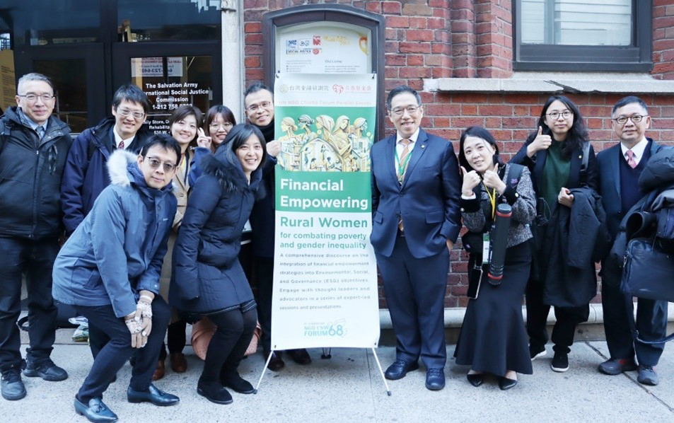
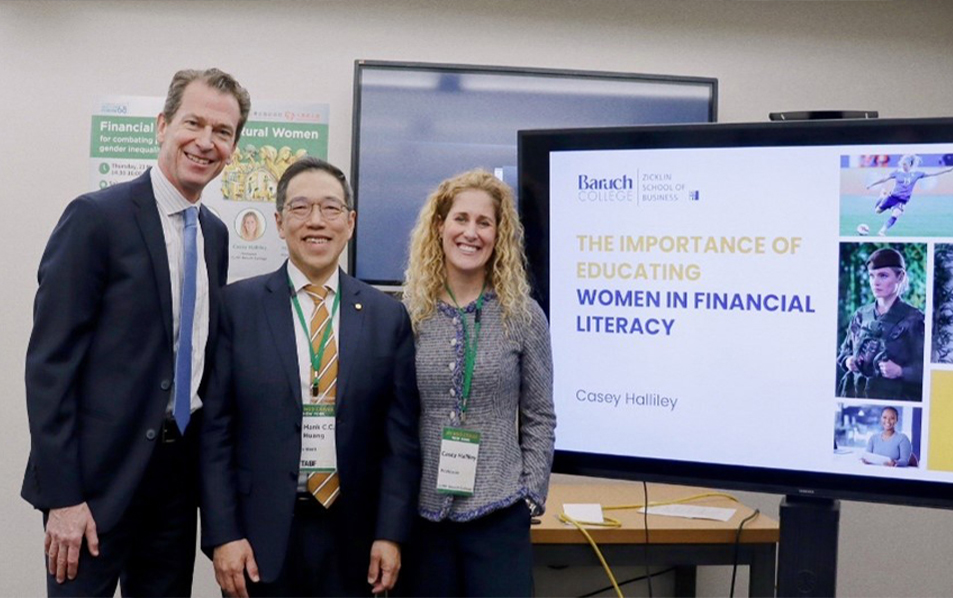
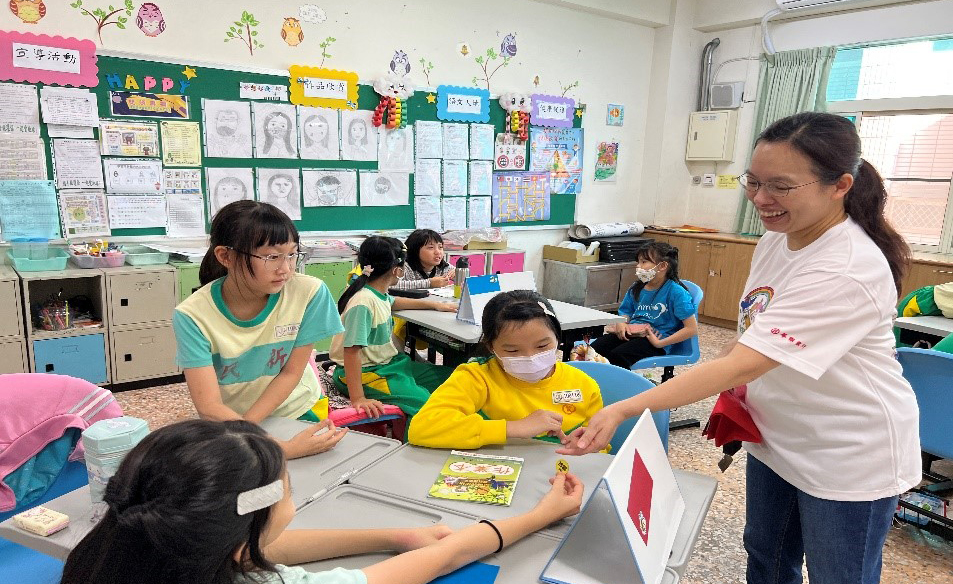
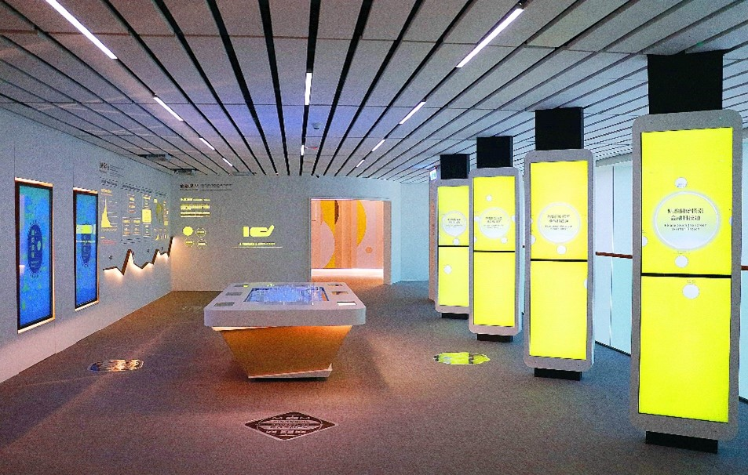
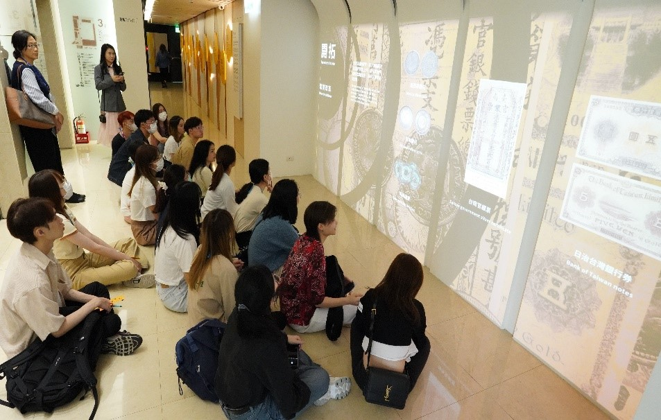

Financial Inclusion
2024 TABF Official Website – Financial Inclusion Group
Financial Inclusion at TABF
TABF advocates for diverse teaching methods tailored to different audiences, utilizing modular and systematic knowledge structures, developing different teaching tools, integrating behavior tracking, and producing videos on finance to expand the dissemination of knowledge.
Our Mission
To lead awareness and enhance the breadth and depth of financial inclusion
To enhance literacy to reduce fraud and improve the financial resilience of the public
Our Strategy
Strengthen public understanding of financial inclusion
Conduct international outreach on financial inclusion
Implement our self-developed KAP financial literacy education model
Deepen financial corporate social responsibility (CSR) initiatives across Taiwan
Our Impact
Our Target Audiences
Financially vulnerable groups such as:
Individuals under 30 and over 60
New immigrants and indigenous people
The unemployed or gig workers
Households with low income
Renters and those living in social housing
Individuals with unstable marital status
Our Achievements
1. Promoted Taiwan’s Financial Inclusion at UN CSW68
The 68th session of the United Nations Commission on the Status of Women (CSW68), held in New York City, focused on the theme of "Women's Financial Issues and Economic Equality," sparking lively discussions. Seizing the opportunity of the gathering of delegates from various countries, TABF collaborated with domestic and international non-governmental organizations (NGOs) to organize two parallel meetings officially recognized by the United Nations. This allowed Taiwan to showcase its achievements in promoting financial inclusion on the global diplomatic stage.


2. Pioneered a Multi-Stakeholder CSR Collaboration Program
In 2023, in collaboration with TABF, Hua Nan Bank launched financial education advocacy campaigns across 32 administrative districts and 65 elementary schools in Tainan City, Taiwan. Developed by TABF, the curriculum covered concepts such as spending, unexpected expenses, family burden, and fraud prevention. With the support of legislator Kuo, Kuo-Wen and the Tainan City Government, this initiative made Tainan the first city in Taiwan to undergo experiential financial education at the community level.


3. Financial Explorer 62 - Taiwan's First Financial Museum Click here to learn more.
Under the direction of the FSC, TABF created Taiwan’s first museum of finance. Completed in late 2022, the name Financial Explorer 62 reflects the fusion of the financial sector's spirit of exploration and TABF's training base. FE62's historical collection and a variety of media display the trajectory and achievements of Taiwanese finance. Moreover, interactive programs simulating financial planning help to broaden audiences' financial horizons and build proper attitudes towards finance.


Our History
- Established the Financial Inclusion Group to expand financial education advocacy
- Presented the KAP education model at the NGO Forum of the 68th Session of the Commission on the Status of Women (CSW68)
- Launched the CSR Financial Well-being Public Welfare Project in collaboration with Hua Nan Bank, advancing financial education in elementary schools across Tainan City, Taiwan
- Published the 2022 Taiwan Financial Lives Survey
- Introduced two online tests: the Financial Personality Assessment and Financial Resilience Test
- Released Taiwan's first Financial Lives Survey, defining six major financially vulnerable groups
Future Plans
Continue cooperating with banks on CSR initiatives to promote financial education throughout Taiwan.
Release the 2024 Taiwan Financial Lives Survey